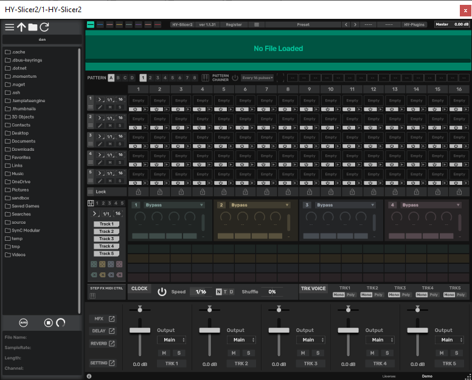

Hy Slicer VST
I’m digging around again to find a slicer plugin for doing drum breaks. In the past I’d use Recycle or something similar to chop my breaks up (and extend the tails) and then use FL Studio or another sampler to sequence them.
Later on I discovered Geist and similar apps. FL has a slicer too. I tried to like this but I still did it my old school way.
Now I’m looking again. I found one called HY-Slicer. Going to try it out right now.
https://hy-plugins.com/product/hy-slicer2/
OK I tried to resize the window and it froze. Not a good start. It’s a very busy window. Live just completely froze on me.

There’s a lot going on there.
OK it’s got this sort of step sequencer that is very tiny and hard to read. I’m starting to understand what’s going on though. There are some per-step effects slots that look kind of cool.
Looks like maybe there are some automation lanes here too. I’m not sure if this is what I’m looking for as I can do most of this stuff in the DAW too. I don’t need all of this as a standalone feature.
This is kind of a cool plugin but it’s a little laborious to do what I want. It’s cool that you can pull in more than one loop file and drag them into the same arrangement with layers. It’s unclear what per-layer effects are for. I would think I’d want to have individual envelopes on each cell in the grid here.
It has multiple outputs, which is nice. I’m sure there is a good workflow that could come out of this plugin. I will have to revisit it after I evaluate a few more.